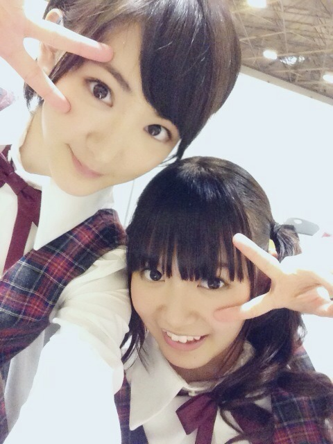

| 2014/05 18 Sun | ひめたん-OoO-その445 |
土曜日全握・アンダーライブ
日曜日個握in名古屋！
来てくださったみなさん
本当にありがとうございました( ^O^ )
お留守番ちーむのみなさんレポお待たせ！
◎全国握手会

いこたん (生駒里奈ちゃん)とペアの11レーン
いこたん、いこまふぁむのみなさん
お世話になりました(＊^^＊)
そしてひめきゅんさん
昨日もたくさん楽しかったよ
会いに来てくれてありがとうー＊＊
いこたんひめたんレーンは初！
いこたんびーむも炸裂してましたね
いこたんとは密かに趣味が重なったりで
密かに気が合う密かなふたりなのですんふふ
あっそうだ いこたんと言えば
昨日の「世界一受けたい授業」のVTRに
ひめたんちらっと出たんだってー( ´ ▽ ` )笑
コメントで教えてくれたひとありがとう！
◎ アンダーライブ
今回のライブでは新たに
ぐるぐるカーテン、扇風機、
せっかちなかたつむり、孤独兄弟、
ダンケシェーン
をやりました！
ひめたんは
せっかちなかたつむりやったよ＼(^O^)／
立ち位置は左から
星野、新内、大和、ちはる、中元、飛鳥、衛藤
MCでも言ったけどあみだくじで決めたの
ひめたんは高山ポジ！
そして感想ですが
もうー楽しかった！やり切った！
1時間充実したライブでした(＊^^＊)
あんなにたくさんの人が
来てくださってるなんて思ってもなくて
ステージ出てった瞬間ふあああああってなったのー
全握で朝から参戦してるぞーって方も
たくさんいたと思うの、正直疲れたと思うの
それでも私たちアンダーメンバーのために
来てくれて本当にありがとう！
最後のアンダーライブってことで
私たちは全力でした
ひめたんはライブが好きなひとだから
1時間出ずっぱりでパフォーマンス出来て
お腹いっぱい歌えて大満足∩^ω^∩
8thアンダー楽しかったな
みんなお疲れ様でしたっ
ひめたんうちわにひめたんタオルに
ひめたんTシャツに
ひめたんコール！ぴんくのサイリウム！
ひめきゅんさんの姿たくさん見っけたよ（ ; ; ）
握手会でも「アンダーライブ行くよ」って
たくさん言ってくださって
おっけ！絶対見つける！って思ったもん♪
さらに、9thアンダーライブが
決定しました( ^O^ )
詳しくは公式サイトをチェックしてみてね
アンダー推しのあなたにとっては
充実したライブになること間違いなしですよ！
またユニット曲とかするのかなあ
なんかリクエストもしあったら
コメントとか握手会とかでこっそり教えてー
◎個別握手会

4部......ポニーテールしてクルッてするやつ
5部......くるくるハーフツイン
写メは5部☆
ということで
来てくださったみなさん
ありがとうございました(ノ)・ω・(ヾ)
なんか！ほんとに！
こんなにたくさんの方が集まってくれてるなんて
思ってもなかったから
おかげでとっても充実した握手会になりました！
名古屋は7thの握手会が1月だったから
なんと5ヶ月ぶり。
名古屋のみなさん本当におまたせしました
そしておじゃましました
久々の名古屋楽しかったです♪
そして遠征ちーむのみなさん
遠いところからわざわざ会いに来てくれて
本当にありがとうー♪♪
アンダーライブの感想やら
選抜発表を受けての感想やら
日記やモバメの話やなんやらかんやら。
もうね、
ずーっとにこにこしてた(゜ω゜)
それからいつものことながら
りぼん率、ぴんく率、名札率が高くて
ひめはもう るんるんよー♪
はじめましての方は
勇気を出して会いに来てくれて
ありがとうねー！
お久しぶりのみなさん
元気そうな顔見れて嬉しかったよ
また名古屋行くから待っててね！

 好きな野菜は？
好きな野菜は？
えーなんだろう
これ！ってのは特にないけど
サラダは好んで食べるほうです
ねーねー、ひめたん！
林と森の違いってなにぃ？
えっとねわかんない......
規模の違い？
誰か知ってるひと教えてー
あのね、家で飼ってるチワワ、
改名しようと思うんだけど、
「ほたて」と「とうふ」だったら
どっちがいいと思う？？
まず改名しちゃってもいいの(´・ω・｀)？
ひめたんだったら ほたてちゃん 派だけど
改名するか否かもうちょっと考えてみて(´・ω・｀)
逆に味噌煮込みうどん好きですか？？？
前回の日記にそんな文脈
一切なかったと思うんだけどまあいいや
好き嫌い以前に食べたことないかな
美味しそうだとは思いますよー
私はグレープフルーツというものが
この世で一番嫌いなんですが
最近毎朝グレープフルーツを
食すようになったひめか様は
どのようにして此奴を克服されましたか？
ひめたんもねー苦手だと思って
何年も食べてなかったんだけど
久々に食べたらすっぱくなかったよ！
とりあ食べてみて！多分美味しいよ( ´ ▽ ` )
いつもコメントたくさん
ありがとうございます
徹夜で課題 ちゃんと終わったよー( ^O^ )
学生さんはテスト間近って方いっぱいいたなー
お互い頑張ろうね！
握手やアンダーライブの感想も待ってます♪
(＊´・ω・＊)
コメント(521)
2014/05/18 23:48